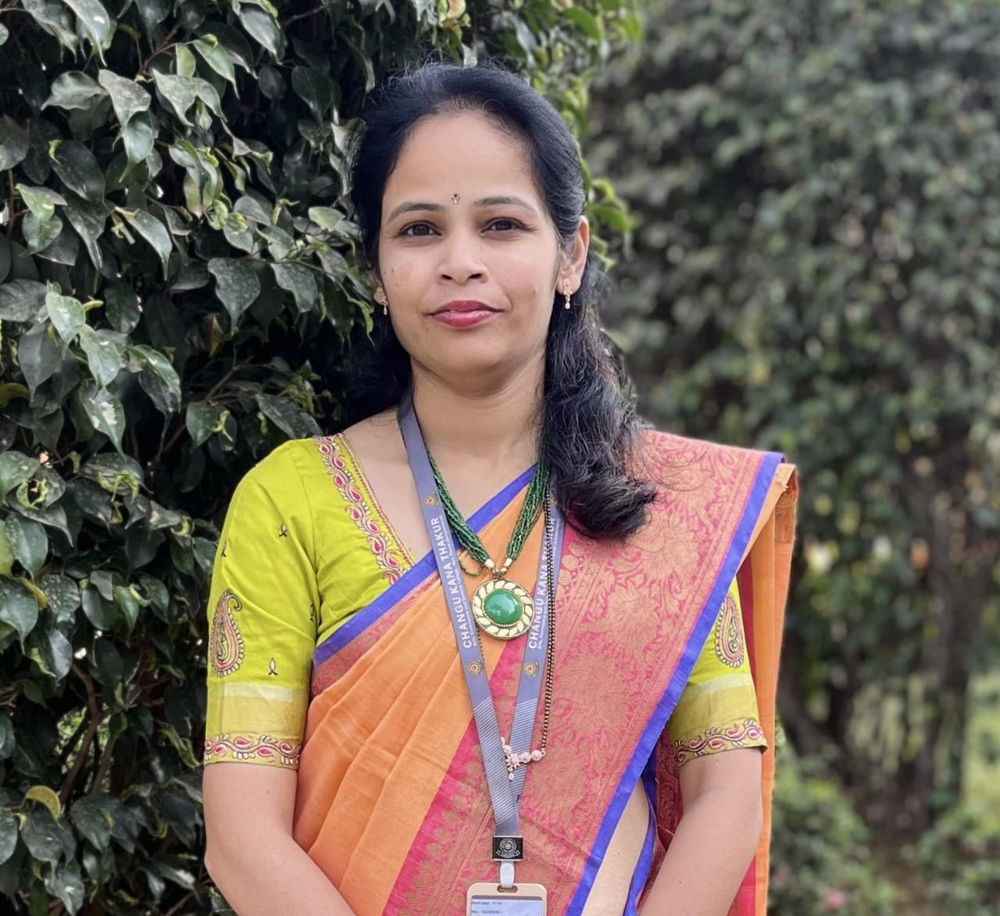

Academic portfolio · Microbiology
Dr. (Mrs.) Shweta Vinayak Humbrwadi
Department of Microbiology
Changu Kana Thakur Arts, Commerce and Science College, New Panvel (Empowered Autonomous)

Welcome
Academic profile
Explore my academic background, teaching experience and research interests in microbiology.
About
Academic journey and professional profile.
02Education
Undergraduate, postgraduate and doctoral education.
03Qualifications
Academic qualifications and eligibility.
04Teaching Experience
Fourteen years of UG and PG teaching experience.
05Research Interests
Microbiology, PGPR and environmental applications.
06Contact
Departmental affiliation and contact details.
01 · Profile
About
I am Dr. (Mrs.) Shweta Vinayak Humbrwadi, associated with the Department of Microbiology at Changu Kana Thakur Arts, Commerce and Science College, New Panvel (Empowered Autonomous). My academic interests focus on microbiology, with particular attention to plant growth-promoting rhizobacteria and their applications in sustainable agriculture and environmental management.
02 · Academic background
Education
- Ph.D. in Microbiology · 2025Mumbai University, Mumbai
- Master's degreeShivaji University, Kolhapur
- Bachelor's degreeShivaji University, Kolhapur
03 · Qualifications
Academic Qualifications
- MH-SETQualified in 2019
- Doctoral degreePh.D. in Microbiology, Mumbai University, completed in 2025
04 · Teaching
Teaching Experience
14 years of undergraduate (UG) and postgraduate (PG) teaching experience in Microbiology.
05 · Research areas
Research Interests
- Plant Growth-Promoting Rhizobacteria (PGPR)
- Heavy-metal-resistant microorganisms
- Microbial-assisted phytoremediation
- Agricultural Microbiology
- Environmental Microbiology
06 · Get in touch
Contact
Department of Microbiology
Changu Kana Thakur Arts, Commerce and Science College, New Panvel (Empowered Autonomous)
Email contact details will be added later.